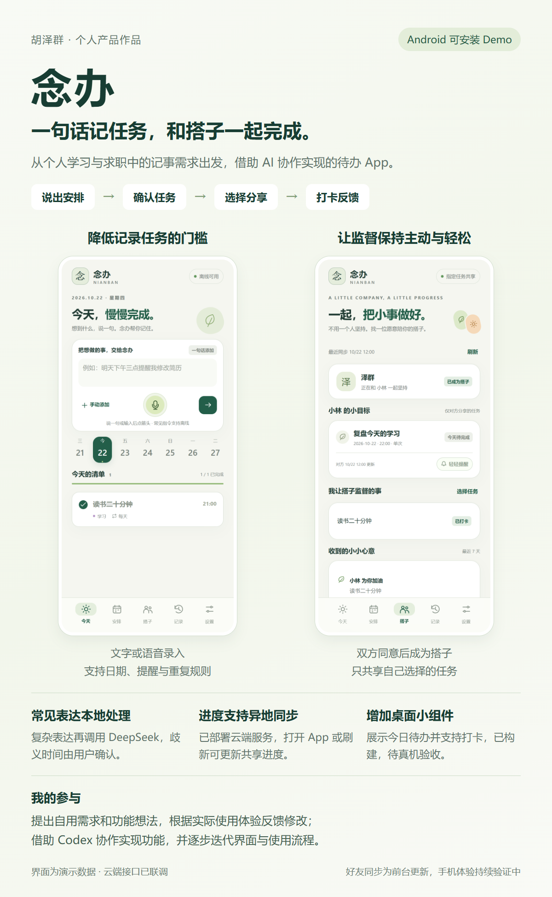

简单安排直接记
常见表达本地解析，复杂表达才调用 DeepSeek；歧义时间由用户确认。
一句话记任务，和搭子一起完成。
从个人学习与求职中的记事需求出发，借助 AI 协作实现的任务助手。把自然语言变成清晰待办，再用主动分享与打卡反馈帮助执行。
这里是作品展示页。实际功能请安装 Android Demo；项目处于个人内测阶段。

常见表达本地解析，复杂表达才调用 DeepSeek；歧义时间由用户确认。
邀请码申请、双方同意后关联，只共享主动选择的任务，支持撤回和结束关系。
今日清单、完成反馈和桌面小组件，让任务从记录进入执行与回顾。
提出个人使用需求与功能想法，根据实际体验提出界面和流程修改，借助 Codex 协作实现并持续迭代。
代码实现、模型接入、云端部署和自动化联调使用 AI 协作；个人贡献集中在需求方向、功能选择、体验反馈和验收。
个人任务保存在手机；云端只交换共享任务、搭子关系和互动。模型密钥不通过搭子同步上传。
已经交付可安装 APK，搭子服务真实 HTTPS 接口联调通过；桌面小组件完成日期与状态逻辑测试。
好友进度在打开 / 返回 App、手动刷新及前台每分钟更新，不支持关闭 App 后的即时推送。新版两台手机异地使用、不同桌面启动器、锁屏与重启后的提醒送达仍待实际设备验证。预编译 APK 使用有限开发测试环境，存在额度、有效期与可用性限制。没有规模用户或留存提升数据。